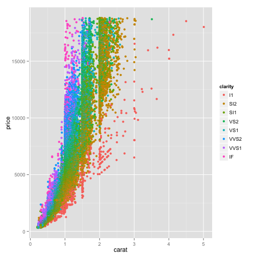

Chapter 13
- Correlation and Regression
- Presented by: Sherri Verdugo, M.S.
- Instructor, CSUF Sociology Department
- Class: Soc 303
Prologue
Regression and Correlation evaluate the strength of a relationship between variables. This time we are looking at interval or ratio levels of measurement. Our question of interest is: "What is the strength of t he relationship between the variables" for at least two variables. This time, we are looking at making a prediction. We do this using the techniques presented in Chapter 13 and Chapter 14.
First we introduce a correlation coefficient, to ascertain the magnitude of relationship between two variables. If the value is large enough, we generate a linear regression equation. The larger our correlation coefficient, the more accurate the predictions will be.
For example, does variable x have a relationship with variable y? Can we make a prediction about the variable from given information?
Setting up
When is correlation-regression analysis used?
| Info. |
Outcome |
| Given |
\(\;\) Two individual (raw score) variables measured by interval/ratio scales |
| Task |
\(\;\) Measure the strength of the relationship between variables |
| Output |
\(\;\) If that relationship is sufficiently strong, describe the nature of the relationship between the two variables in such a way that it will be possible to predict a respondent's score on one variable if we know that person's score on the other variable |
Example of data used for Regression
data(iris)
head(iris)
# Sepal.Length Sepal.Width Petal.Length Petal.Width Species
# 5.1 3.5 1.4 0.2 setosa
# 4.9 3.0 1.4 0.2 setosa
# 4.7 3.2 1.3 0.2 setosa
# 4.6 3.1 1.5 0.2 setosa
# 5.0 3.6 1.4 0.2 setosa
# 5.4 3.9 1.7 0.4 setosa
Example from textbook pg. 445
We might be interested in other data besides Iris information. For example, we might want to look at political corruption:
| Employee |
x |
y |
| 1 |
\(\;\) 80 |
\(\;\) 160 |
| 2 |
\(\;\) 70 |
\(\;\) 95 |
| 3 |
\(\;\) 52 |
\(\;\) 97 |
| 4 |
\(\;\) 45 |
\(\;\) 85 |
- x = Annual income (in thousands of US dollars)
y = Mean Monthly contribution in US dollars
Question: does a relationship exist between annual income and mean monthly contribution?
Question: how strong is the relationship?
Question: can we make a prediction?
Question: what is the prediction?
Introduction of terms:
- Correlation Coefficient [page 446]:
- Measure of strength of a relationship in which data are not grouped in tables but are individual raw scores.
- Pearson's Product-Moment Correlation Coefficient (a.k.a. Pearson's r) [page 446]:
- Coefficient that is used when both variables are an interval or a ratio level of measurement.
- Coefficient of Determination (\(r^2\)) [page 446]:
- Indicates the proportion of variation in the dependent variable (y) that can be explained by variation in the independent variable (x).
- Regression Equation [page 447]:
- the mechanism for estimating a y score from the respective x score.
- Correlation-regression Analysis [page 447]:
- The presentation of correlation and regression techniques together.
Graphs
Cartesian coordinates
Sometimes we need to plot the data and we have some key terms that we need to understand:
- Cartesian Plots and Coordinates [page 447]:
- A pictoral representation of the relationship between two or more variables under study. This method was developed by Rene Descartes.
- Origin of a Graph [page 448]:
- The point of a graph where the two axes intersect indicating a value of zero on each axis.
- x-axis [page 448]:
- the axis that extends horizontally.
- y-axis [page 448]:
- the axis that extends vertically.
- Ordered Pair [page 450]:
a set of two numbers in parentheses separated by a comma, indicating a point on a graph.
- x-coordinate [page 450]:
- the first number in an ordered pair
- y-coordinate [page 450]:
- the second number in an ordered pair
Cartesian Coordinates Review

We put two number lines together in a single plot.
- x = horizontal
- y = vertical
Cartesian Coordinates Review

- Quadrant I: x is positive and y is positive
- Quadrant II: x is negative and y is positive
- Quadrant III: x is negative and y is negative
- Quadrant IV: x is positive and y is negative
Cartesian Coordinates Review

Look at the origin and the coordinates.
- We have x = 6
- We have y = 4
The concept of linearity
Key terms:
- Function [page 452]:
- The case where a score on the dependent variable (y) may be predicted from a score on the independent variable (x). The value of (y) is obtained either graphically or by an equation.
- Linearity (linear related) [page 452]:
- Relationship that is shown as an exact straight line.
Example of a linear relationship
| Respondents |
\(\;\) x |
\(\;\) y |
| Daryl |
\(\;\) 0 |
\(\;\) 0 |
| Carol |
\(\;\) 4 |
\(\;\) 2 |
| Maggie |
\(\;\) 8 |
\(\;\) 4 |
| Glenn |
\(\;\) 12 |
\(\;\) 6 |
| Abraham |
\(\;\) 16 |
\(\;\) 8 |
| Rick |
\(\;\) 20 |
\(\;\) 10 |
x = Education and y = Total Savings in thousands of dollars
## row.names education savings
## 1 Daryl 0 0
## 2 Carol 4 2
## 3 Maggie 8 4
## 4 Glenn 12 6
## 5 Abraham 16 8
## 6 Rick 20 10

Example: Diamonds
library(ggplot2)
data(diamonds)
head(diamonds,4)
# carat cut color clarity depth table price x y z
# 0.23 Ideal E SI2 61.5 55 326 3.95 3.98 2.43
# 0.21 Premium E SI1 59.8 61 326 3.89 3.84 2.31
# 0.23 Good E VS1 56.9 65 327 4.05 4.07 2.31
# 0.29 Premium I VS2 62.4 58 334 4.20 4.23 2.63
Diamond Plots
A plot of diamonds by clarity
qplot(carat, price, data=diamonds, color=clarity)

Let's look at the relationship
## row.names education savings
## 1 Daryl 0 0
## 2 Carol 4 2
## 3 Maggie 8 4
## 4 Glenn 12 6
## 5 Abraham 16 8
## 6 Rick 20 10
Key Terms
- Correlation Coefficient [page 446]:
- Measure of strength of a relationship in which data are not grouped in tables but are individual raw scores.
- Pearson's Product-Moment Correlation Coefficient (a.k.a. Pearson's r) [page 446]:
- Coefficient that is used when both variables are an interval or a ratio level of measurement.
- Coefficient of Determination (\(r^2\)) [page 446]:
- Indicates the proportion of variation in the dependent variable (y) that can be explained by variation in the independent variable (x).
- Regression Equation [page 447]:
- the mechanism for estimating a y score from the respective x score.
- Correlation-regression Analysis [page 447]:
- The presentation of correlation and regression techniques together.
- Cartesian Plots and Coordinates [page 447]:
- A pictoral representation of the relationship between two or more variables under study. This method was developed by Rene Descartes.
- Origin of a Graph [page 448]:
- The point of a graph where the two axes intersect indicating a value of zero on each axis.
- x-axis [page 448]:
- the axis that extends horizontally.
- y-axis [page 448]:
- the axis that extends vertically.
- Ordered Pair [page 450]:
a set of two numbers in parentheses separated by a comma, indicating a point on a graph.
- x-coordinate [page 450]:
- the first number in an ordered pair
- y-coordinate [page 450]:
- the second number in an ordered pair
- Function [page 452]:
- The case where a score on the dependent variable (y) may be predicted from a score on the independent variable (x). The value of (y) is obtained either graphically or by an equation.
- Linearity (linear related) [page 452]:
- Relationship that is shown as an exact straight line.
- Linear Equation
- Constant
- Variable
- y-intercept
- Slope
- Positive versus inverse (negative) relationship
- Curvilinear versus linear relationship
- Linear regression
- Scatter diagram/Scattergram/scatter plot
- Least Squares Method
- Regression of \(y\) on \(x\)
- Regression of \(x\) on \(y\)
- Coefficient of alienation (\(1-r^2\))
- \(\hat{y}\)--predicted value of y
- Intra class correlation coefficient (\(r_1\) or \(r_i\))
- Correlation ratio [\(E\) or \(\eta\)]